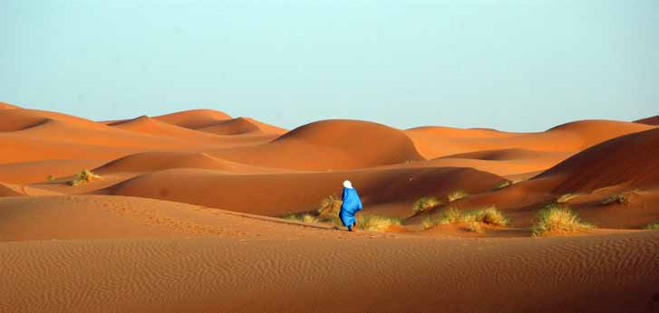

Vi begynder i Hanoi, hvor børnene kan arbejde med kunst og keramik, og I skal på etnologisk museum, der vil give jer en større forståelse for regionens etni-ske befolkning. Inden I fortsætter mod det centrale Vietnam besøger I den fortryllende Ha Long-bugt, der er på UNESCOs liste over verdensarv. Ombord på skibet er der tid til at fortæller historier og hygge sig med børnene. I hører om dyrelivet og besøger et lille fiskersamfund, så I får en fornemmelse af, hvordan en familie bor i Vietnam. I Hoi An kommer I til at eksperimentere med kogekunst og tager på cykelture i de grønne, omkringliggende landskaber. I Hoi An er der mulighed for at slappe af og nyde strandlivet, inden rejsen slutter i det sydlige Vietnam.
Rejsen indeholder mange højdepunkter, bl.a. besøg hos en vietnamesisk familie uden for Hanoi. Her mærker I den vietnamesiske gæstfrihed og ser hvordan en almindelig familie lever. Vi har givet jer god tid i netop Hanoi som de fleste besøgende finder særligt charmerende. Glæd jer ligeledes til den smukke sejltur i Ha Long-bugten, hvor I overnatter på skibet og kan nyde den stille aften og morgen i bugten med de mange vidunderlige kalkstensbjerge.
Rejsen henvender sig til familier, der vil opleve verden sammen – og alle generationer er velkomne. I rejser sammen og bestemmer til dels selv tempoet. Rejserne rummer både afslapning og indhold og så er der tid til, at være sammen om de mange oplevelser. I rejser rundt i egen bus og der er tænkt på, at transporttiden ikke overstiger 3-4 timer. Hotellerne er børnevenlige med swimmingpool og god komfort - uden det er luksus.
DAGSPROGRAM (Se detaljer på hjememsiden)
Dag 1 Afrejse fra Danmark
Dag 2 Ankomst Hanoi
Dag 3 Templer og familiebesøg. Hanoi.
Dag 4 Familietid. Hanoi
Dag 5 Ha Long Bugten
Dag 6 Ha Long Bugten. Fly til Hoi An
Dag 7 Badning. Hoi An
Dag 8 Fiskelandsby og cykeltur. Hoi An
Dag 9 Landsby og cykeltur. Hoi An
Dag 10 Badning. Hoi An
Dag 11 Hoi An. Fly til Ho Chi Minh City
Dag 12 Udflugt til Cu Chi tunellerne. HCMC
Dag 13 Mekong-deltaet. Can Tho
Dag 14 Marked i Can Tho. Afrejse
Dag 15 Hjemkomst
Pris fra 10.900 kr / børn under 12 år fra 5.900 kr
Prisen inkluderer:
- Kørsel i bil/minibus med jeres egen lokale engelsk-talende rejseleder
- hotelophold på gode turistklassehoteller med swimming-pool
- Morgenmad på hotellet hver dag, overnatning i sovevogn dag 6.
- de i programmet nævnte arrangementer og entréer
- 24/7 hotline til guide på hele rejsen
Prisen inkluderer ikke:
- Fly til og fra Vietnam
-- Drikkepenge til guide og chauffør
Da rejsen kun er for jeres familie vælger I selv jeres rejsetidspunkt. Kontakt os for at høre nærmere om prisen på fly.
SRI LANKA FAMILIEREJSE
Sri Lanka har et rigtigt behageligt tropeklima og en vidunderlig natur med høje bjerge, blinkende rister-rasser, bølgende temarker, vilde vandfald, uendelige palmestrande og saftige, grønne regnskove. De mange dagobaer (Buddha-statuer) og gulklædte, kronragede munke overalt viser buddhismens store betydning.
Rundrejsen er tilrettelagt med tre opholdssteder. På dagsture oplever I tidligere kongebyer, hvor man fornemmer landets historiske dybde, kommer til Sigiriya, hvor Kong Kasyapa byggede sin særprægede løveborg på en klippetop. I bor bl.a. i det smukke Kandy, den gamle kongeby med Tandens Tempel. I besøger kokosplantager og hører om teproduktion, I besøger en camp for elefantunger, der er kommet til skade i naturen og som genoptrænes for at de igen kan klare sig.
Rejsen slutter ved stranden, hvor I kan observere blåhvaler.
Rejsen henvender sig til familier, der vil opleve verden sammen – og alle generationer er velkomne. I rejser jeres familie sammen med en af vores dygtige lokale guider, der taler godt engelsk og som sørger for, at rejsen bliver en stor oplevelse for hele familien.
Da rejsen skræddersyes til jeres familie kan I ændre i programmet så det passer til jeres ønsker og behov.
DAGSPROGRAM (Se detaljer på hjememsiden)
Dag 1 Afrejse fra Danmark
Dag 2 Ankomst. Colombo
Dag 3 Colombo og videre til Habarana
Dag 4 Halvdagsudflugt. Habarana
Dag 5 Løveklippen. Hanarana
Dag 6 Vandretur til små landsbybesøg og elefanter. Habarana
Dag 7 Habarana - Kandu. Kokosplantager og krydd-erihaver
Dag 8 Elefanter. Kandy
Dag 9 Teplanteger. Kandy
Dag 10 Og så til stranden. Mirissa
Dag 11 Blåhvaler. Mirissa
Dag 12 Mirissa
Dag 13 Mirissa
Dag 14 Hjemkomst
Pris fra 10.900 kr / børn under 12 år fra 5.900 kr
Prisen inkluderer:
- Kørsel i bil/minibus med jeres egen, lokale engelsktalende rejseleder
- hotelophold med morgenmad på hotellet hver dag
- de i programmet nævnte arrangementer og entréer
- 24/7 hotline til guide på hele rejsen. Prisen inkludere ikke:
- Fly til og fra Sri Lanka
- øvrige måltider
- drikkepenge til guide og chauffør
Da rejsen tilrettelægges kun for jeres familie bestemmer I hvornår I ønsker at rejse. Kontakt os derfor for de bedste priser og flytider.

MAROKKO FAMILIEREJSE
Vi har sammensat en meget alsidig Marokko-rejse, der kombinerer det farvestrålende Marrakech med ophold i den smukke Sahara-ørken. I ørkenen overnat-ter I under den stjerneklare himmel på et lille ørk-enhotel med udsigt over det smukke ørkenlandskab.Der er mulighed for at forlænge rejsen med ophold i Agadir, hvor I kan nyde stranden og det varme klima. På hele rejsen har I vores lokale, engelsktalende familieguide, der sikre at alt det praktiske fungerer så hele familien kan nyde at være sammen om de mange spændende oplevelser, der venter jer.
I rejser med jeres egen guide og chauffør – og har god tid på egen hånd. Vi har lavet rejser til Marokko siden 2008 og det er den erfaring vi bruger når vi tilrettelægger vores fami-lierejser, hvor der er indlagt flere ting, der især retter sig mod børnene. Vores familierejser er tilrettelagt af forældre med børn og rejserne bygger derfor på de mange erfaringer vi har med at rejse med børn i hele verden. Der er derfor i programmet en del fritid som vi kalder familietid, for på en rejse sammen gælder det også om at slappe af og dele de mange oplevelser i jeres helt eget tempo.
De fleste dage er der program på hele dagen eller dele af dagen, men I bestemmer selv tempoet og I kan undervejs på rejsen tilrettelægge, hvordan dagens skal stykkes sammen. Det er den fleksibilitet som de fleste familier søger og som I sidste ende gør rejsen til en god familieoplevelse.
DAGSPROGRAM (Se detaljer på hjememsiden)
Dag 1 København – Marrakech
Dag 2 Marrakech
Dag 3 Marrakech
Dag 4 Marrakech - Aït Ben Haddou - oasebyen Skoura
Dag 5 Skoura - Sahara
Dag 6 Sahara
Dag 7 Sahara - Nakob - Tamnougalt
Dag 8 Tamnougalt - Quarzazate
Dag 9 Quarzazate - Marrakech
Dag 10 Marrakech - afrejse
Rejsen kan forlænges med ophold ved stranden i Agadir.
Pris fra 8.500 kr / børn under 12 år fra 7.500 kr
Prisen inkluderer: - Overnatning på hoteller inkl. morgenmad
- Alle måltider, dog undtaget frokost dag 1, 3 og 10, middag dag 10.
- kørsel i bil/minibus
- engelsktalende lokal familieguide
- de i programmet nævnte arrangementer og entréer
Prisen inkluderer ikke:
- fly til og fra Marokko. Kontakt os for de bedste priser.
- drikkepenge til guide og chauffør
Da rejsen tilrettelægges kun for jeres familie bestemmer I hvornår I ønsker at rejse. Kontakt os derfor for de bedste priser og flytider.
JORDAN FAMILIEREJSE
Vi begynder rejsen i det nordlige Jordan, hvor vi blandt andet besøger de romerske ruiner i Jerash - en af de mest velbevarede romerske provinsbyer i verden. Her hører vi om de gamle romere og vi sørger for, at også børnene synes det er sjovt. En af turens store højdepunkter er Petra, der langsomt kommer til syne når vi kommer gennem den smalle slugt og ser den imponerende ruin, der går tilbage til nabatæernes tid. Nogle vil måske huske den smukke portal fra slutscenen i Indiana Jones? Om alle omstændigheder træder I ind i et sandt eventyrunivers. Her kan både børn og voksne være med.
På rejsen bevæger vi os gennem den smukke ørken med de enorme hvide sandyner så langt øjet rækker - lige indtil vi når vores ørkencamp. Her skal I spise aftensmad under den mørke, stjerneklare himmel in-den vi falder til ro efter en lang og spændende dag. Vi har indlagt dage ved Aqaba-bugten, hvor I kan nyde stranden og høre historien om Aladdin, der netop kom fra disse kanter.
Turens mange højdepunkter rundes af med et par dage på skønt hotel direkte til Det døde Hav. Rejsen henvender sig til familier, der vil opleve verden sammen – og alle generationer er velkomne. I rejser sammen og bestemmer til dels selv tempoet. Rejserne rummer både afslapning og indhold og så er der tid til, at være sammen om de mange oplevelser. Hotellerne er børnevenlige med swimmingpool og god komfort - uden det er luksus (omend hotellet ved Det døde Hav er 5-stjernet).
DAGSPROGRAM (Se detaljer på hjememsiden)
Dag 1 Afrejse fra København og ankomst Amman
Dag 2 Amman
Dag 3 Amman - Jerash - Amman
Dag 4 Amman - Madaba - Wadi rum (ørken)
Dag 5 Wadi rum - Aqaba
Dag 6 Aqaba
Dag 7 Aqaba
Dag 8 Aqaba - Petra
Dag 9 Petra - Det døde Hav
Dag 10 Det døde Hav
Dag 11 Det døde Hav
Dag 12 Det døde Hav – Amman - København
Pris fra 11.900 kr / børn under 12 år fra 5.950 kr
Prisen inkluderer:
- gode hotelle med morgenmad
- kørsel i bil med air condition
- lokal, engelsktalende lokalguide på hele rejsen
- de i programmet nævnte punkter inkl. evt. entré
Prisen inkluderer ikke:
- fly København – Amman - København. Kontakt os for pris
- drikkepenge til guide og chauffører
- måltider ikke inkluderet i rejsen, beregn ca. 100 kr per dag.
- visum fås ved ankomst og koster 300 kr (betales inden rejsen)
Da rejsen tilrettelægges kun for jeres familie bestemmer I hvornår I ønsker at rejse. Kontakt os derfor for de bedste priser og flytider.